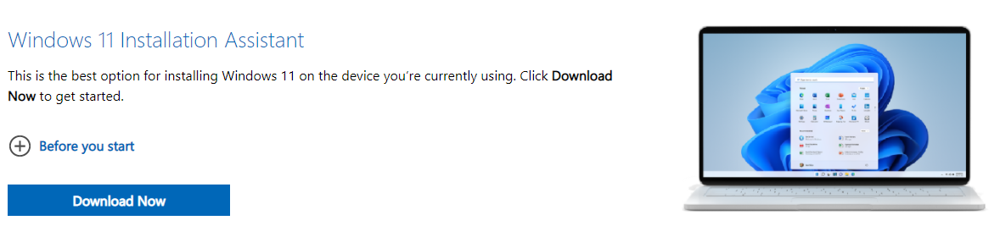
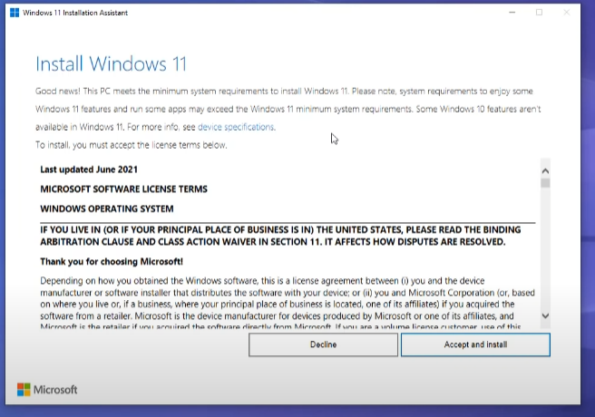
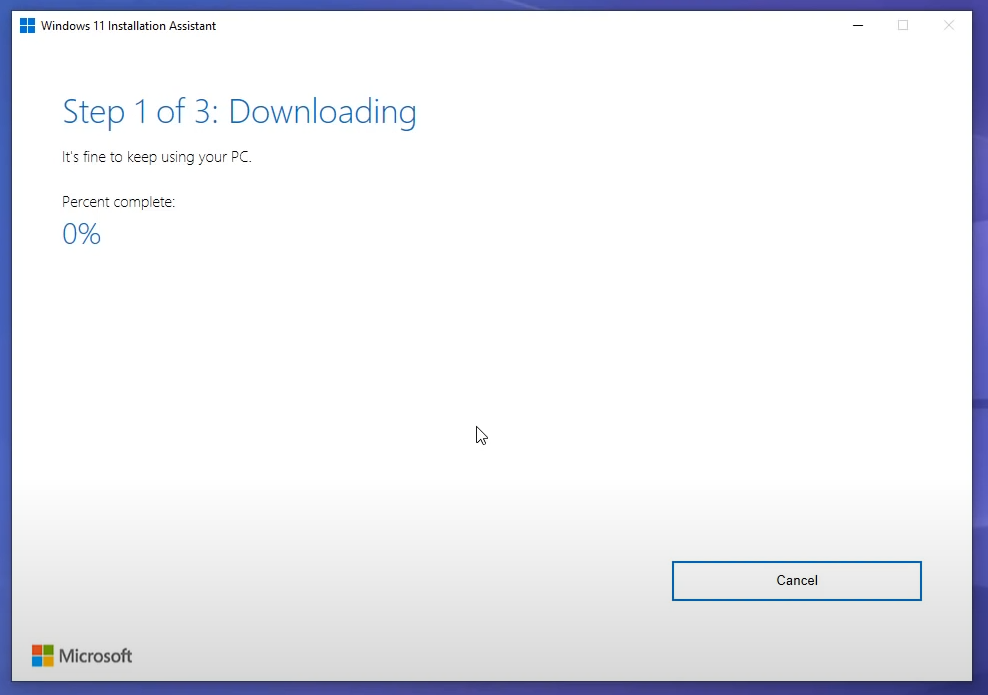
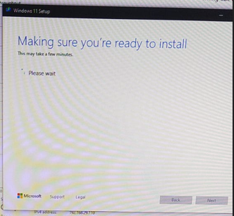
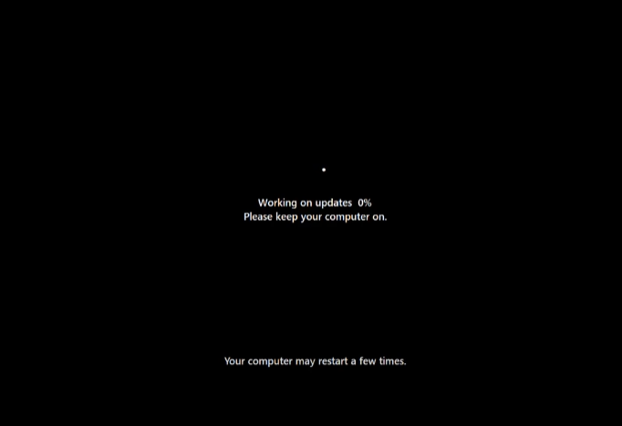
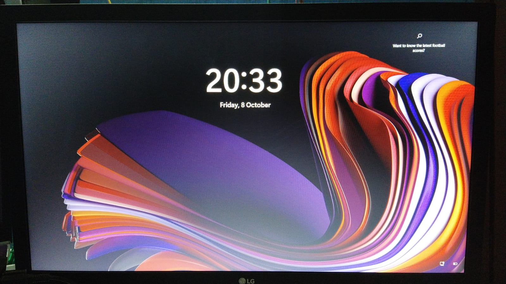

Hello folks, recently Microsoft rolled out its new Windows 11 on 5 October. If you don't know about the features of Windows 11, then you can check out this blog. So, this blog is solely for those who want to upgrade to windows 11 and are confused about whether they should update or not? Despite being the latest version of Windows, I don't think you should upgrade to Windows 11 right now. Windows 11 has been optimized for good productivity and also packs with a Good UI design, but it is too early to migrate. I mean in probably 3-4 months I might upgrade, but not now. Why? Because I personally think there's not much to explore in windows 11 right now. The most hyped feature, the support for android apps in windows, for which I was excited about the most, got delayed, and also, there are reports coming that the final release has some performance issues. I heard some news where a user said:
“A Dell XPS 13 just felt slower, despite its 10th-generation Intel processor and 8 gigabytes of RAM. Even when I closed Slack, which was eating RAM like a hungry hippo, the computer still wasn't as peppy as it was on Windows 10. If your older computer is still running smoothly on Windows 10, you might think twice before upgrading!”
If you still dare to upgrade to Windows 11, then here's the official method to do so.
1. Navigate to this site: https://www.microsoft.com/en-in/software-download/windows11
2. Now click on download installation assistant.
3. Now open the assistant and click on agree to start the installation.
note: YOU MUST BE CONNECTED TO THE INTERNET SO THE INSTALLER CAN DOWNLOAD THE FILES
4. This is how it will look while downloading
5. It will take a while, remember if you are on Laptop, make sure to plug in the charger.
6. Once the files are downloaded and installed it will look like this.
7. Now your pc will look something like this which means we are almost there,
And once it is done you will be greeted with Windows 11 Lock screen,
That's all for this tutorial. Hope you will successfully upgrade to Windows 11. If you still have any doubt, then feel free to comment below. Thank you everyone and I'll catch you in the next tutorial.